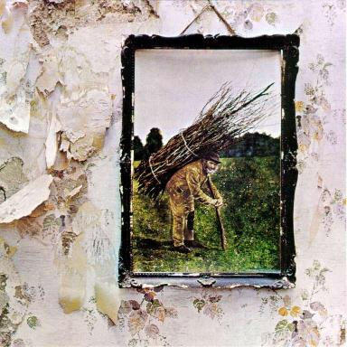
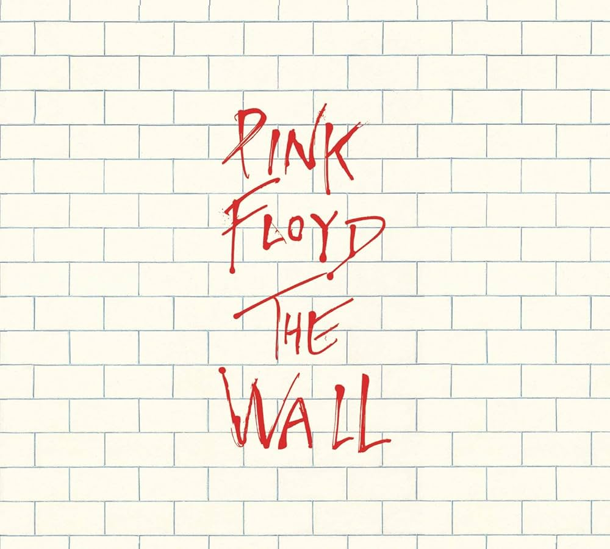

Curiosidade: Foi o último álbum gravado pela banda (embora Let It Be tenha sido lançado depois). O título original seria "Everest", mas como eles não queriam viajar até o Nepal para tirar a foto, decidiram apenas sair do estúdio e atravessar a rua Abbey Road.
Led Zeppelin IV (Led Zeppelin)

O álbum sem título que se tornou um ícone.
Curiosidade: Este álbum não possui o nome da banda nem o título escrito em lugar nenhum da capa original. Jimmy Page queria provar que a música do Zeppelin era mais importante do que o marketing e que o disco venderia apenas pelo seu conteúdo.
The Wall (Pink Floyd)

O álbum que se tornou um marco do rock conceitual.
Curiosidade: É um álbum "ópera-rock" conceitual que narra a história de Pink, um personagem que constrói um muro metafórico ao seu redor. Durante a turnê original, um muro real era construído no palco entre a banda e o público.
A Night at the Opera (Queen)
O álbum que elevou o Queen ao status de lenda.
Curiosidade: Na época de seu lançamento, foi considerado o álbum mais caro já produzido na história da música britânica, devido à complexidade das camadas de voz em "Bohemian Rhapsody", que foram gravadas e regravadas centenas de vezes.
OS VIDEO CLIPES QUE MARCARAM O ROCK
Don't let me Down(The Beatles)
o utimo show.
Curiosidade:Os Beatles subiram no telhado do prédio deles em Londres e tocaram de surpresa por 42 minutos. O som parou a rua e a polícia apareceu para desligar os amplificadores.
Essa foi a última apresentação ao vivo da carreira deles, pois a banda já estava em crise, cheia de brigas internas, e se separou definitivamente poucos meses depois.
Led Zeppelin IV (Led Zeppelin)
A fuga.
Curiosidade: A música foi composta na Islândia enquanto a banda fugia de um motim civil em um show cancelado, servindo de inspiração para a letra sobre vikings invadindo novas terras.
On the Turning Away 1989 (Pink Floyd)
a humanidade na música.
Curiosidade: Foi o hino que provou a força do Pink Floyd sem Roger Waters, consagrado por sua forte mensagem humanitária e um solo de guitarra épico de David Gilmour.
A Night at the Opera (Queen)
Curiosidade: Para o lançamento de 30 anos em 2005, a produção do DVD criou um clipe inédito misturando animações digitais retrô com imagens raras de bastidores e trechos de apresentações antigas da banda, dando vida visual à música pela primeira vez após três décadas.
Espaço do Crítico: Deixe sua Resenha
Qual álbum marcou sua vida? Dê sua nota e conte para nós o porquê.